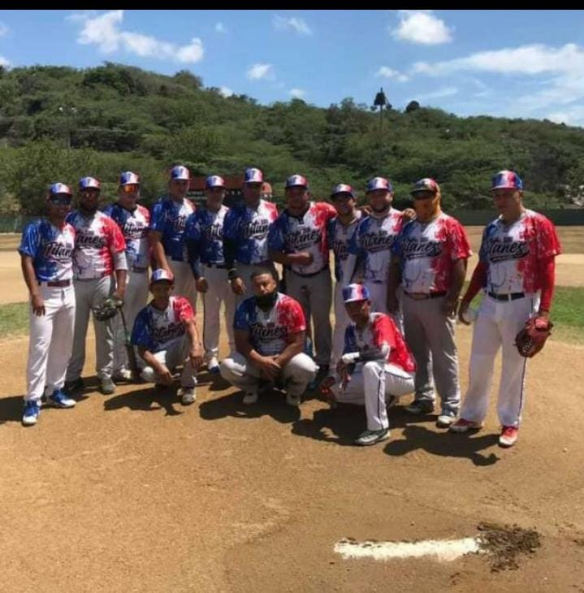

BIENVENIDOS
OBJETIVO DEL EQUIPO
Descubrir los efectos positivos que tiene la práctica del béisbol, como una actividad que favorece el desarrollo personal y social y como ocupación para el tiempo libre.
Participar, con independencia del nivel de destreza alcanzado, en las distintas actividades relacionadas con el Béisbol, fomentando un espíritu de cooperación y el trabajo en equipo para alcanzar objetivos comunes.
Los titanes Gurabo
Aprender a aceptar la derrota y a relativizar la victoria, valorando el esfuerzo de otros.